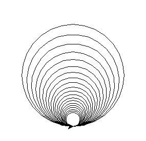
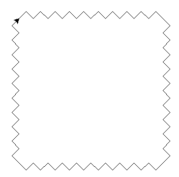
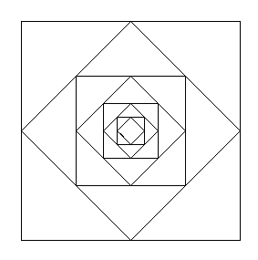

Exercices#
Exercice 1#
Donner dans chaque cas les valeurs affichées par la boucle
for.for m in range(5): print(m)
for k in range(4,8): print(k)
for nombre in range(1,19,3): print(nombre)
for i in range(5): print(i*10-1)
Écrire une boucle
forpour afficher la suite de nombres dans chaque cas:5, 6, 7, 8, 90, 2, 4, 6, 8, 10, 12, 14, 16, 18-1, -2, -3, -4, -54, 9, 16, 25, 36
Exercice 2#
Soit t une variable de type tableau telle que t=[5,7,4,9,6,3,0,1,6].
Dans un éditeur Python, créer la variable
t.Écrire un code qui modifient les valeurs du tableau
ten multipliant chaque valeur par 3.Écrire un code qui modifient les valeurs du tableau
ten soustrayant 10 à chaque valeur.Écrire un code qui modifient les valeurs du tableau
ten élevant au carré chaque valeur.Écrire un code qui remet à 0 chaque valeur de
t.
Exercice 3#
Soit t une variable de type tableau telle que t=[5,7,4,9,6,3,0,1,6].
Dans un éditeur Python, créer la variable
t.Écrire un code qui calcule la somme des valeurs du tableau
t.Écrire un code qui calcule la valeur moyenne du tableau.
Exercice 4#
Écrire un code Python pour réaliser la figure suivante:
Quelques conseils:
importer le module turtle :
from turtle import *définir une variable
rpour le rayon du cerclele rayon de chaque cercle diminue de 10%
Exercice 5#
Écrire un code Python pour réaliser la figure suivante:
{kind=link}
Quelques recommandations:
importer le module turtle :
from turtle import *définir la variable
lpour la dimension des dentsdéfinir la variable
npour le nombre de dents sur une lignecommencer par construire la ligne horizontale supérieure
poursuivre avec les 3 autres côtés
Exercice 6#
Écrire un code Python pour réaliser la figure suivante:
{kind=link}
Quelques recommandations:
importer le module turtle :
from turtle import *importer la fonction
sqrtdu module math :from math import sqrtdéfinir la variable
cpour la longueur du côté du carrécommencer par construire le grand carré
déplacer la tortue jusqu’au milieu d’un côté
calculer la nouvelle dimension du prochain carré
recommencer jusqu’à avoir 8 carrés imbriqués